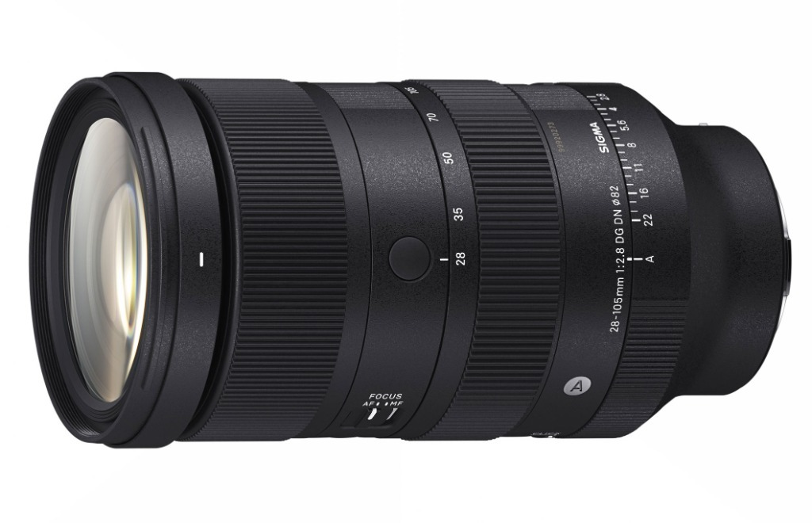
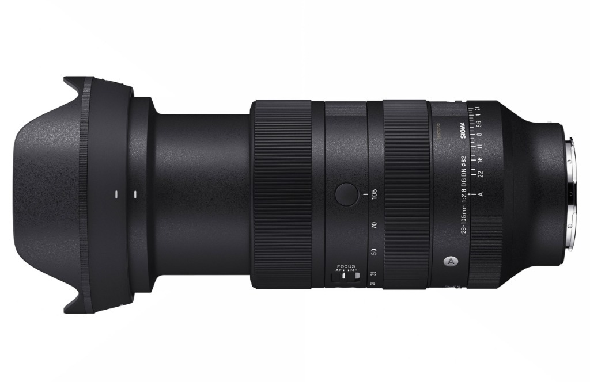

Sigma 28-105mm F2.8 DG DN Art
Il dilemma storico: luce o escursione?
Nel mondo della fotografia professionale esiste da decenni un bivio che ha costretto intere generazioni di fotografi a scendere a compromessi: preferire la luminosità di un 24-70mm F2.8, sacrificando l'allungo sui dettagli, oppure scegliere la versatilità di un 24-105mm F4, rinunciando però a uno stop intero di luce e a quello stacco dei piani che fa la differenza quando cala la sera?
Con il Sigma 28-105mm F2.8 DG DN Art, Sigma ha sparigliato le carte con una proposta coraggiosa: rinunciare a 4 millimetri sul lato grandangolare per spingersi fino a 105mm mantenendo l'apertura costante di F2.8 su tutta l'escursione.
Sulla carta sembra la quadratura del cerchio. Ma per valutare onestamente questa lente bisogna sdoppiare l'analisi su due piani completamente differenti: la fotografia di matrimonio e la fotografia di paesaggio. La stessa caratteristica, infatti, assume un peso diametralmente opposto a seconda del contesto in cui si lavora.

Nel wedding: il Santo Graal del fotografo di cerimonia
Parto dal contesto in cui questo obiettivo mi ha lasciato letteralmente a bocca aperta: il matrimonio e la fotografia di eventi. Anche se il mio core business è il paesaggio e l'astrofotografia, seguo regolarmente servizi matrimoniali selezionati durante la stagione estiva.
In un matrimonio, il 28-105mm F2.8 è quanto di più vicino esista a una lente perfetta. Durante una cerimonia in chiesa o un ricevimento all'aperto, non ho mai sentito realmente la mancanza di quei 4 millimetri tra 24 e 28mm. Al contrario, poter passare in una frazione di secondo da un'inquadratura d'insieme a 28mm al primo piano stretto di un'emozione a 105mm — mantenendo sempre il diaframma F2.8 — rappresenta un vantaggio operativo devastante.
A 105mm a F2.8 lo sfocato è cremoso, il soggetto si stacca dallo sfondo con un'eleganza da teleobiettivo a focale fissa e non si perde nemmeno un momento clou per cambiare ottica. Nel reportage di matrimonio è davvero il 'Santo Graal': un unico corpo macchina con questa lente montata copre l'85% dell'intera giornata.

Nel landscape: quando 4 millimetri fanno la differenza
Quando ci spostiamo sul mio terreno d'elezione, la fotografia di paesaggio in ambiente naturale e montano, la prospettiva cambia radicalmente.
Avere un'escursione fino a 105mm a F2.8 è senza dubbio affascinante per isolare formazioni rocciose o giochi di luce tra le valli. Ma per il mio modo di comporre, il limite risiede esattamente in quel 28mm invece di 24mm. Quattro millimetri sulla carta sembrano una sfumatura trascurabile; nella fotografia di paesaggio sul campo rappresentano un abisso.
Sul lato grandangolare a 28mm è presente una leggera distorsione controllata che contribuisce a dare l'illusione di un campo leggermente più aperto, ma non può colmare la perdita di respiro e di dinamismo sui primi piani ravvicinati che solo un vero 24mm riesce a garantire.
📊 Tabella: Confronto Tecnico & Pratico: 24-70mm II vs 28-105mm
| Caratteristica | Sigma 24-70mm F2.8 II Art | Sigma 28-105mm F2.8 Art |
|---|---|---|
| Escursione Focale | 24-70mm (Grandangolo vero + Medio Tele) | 28-105mm (Grandangolo moderato + Tele spinto) |
| Luminosità Massima | F2.8 costante | F2.8 costante |
| Peso e Trasporto | Circa 745 g (Bilanciato per il trekking) | Circa 995 g (Impegnativo su lunghe camminate) |
| Filosofia di Utilizzo | Ideale nel paesaggio e nel kit da trekking | Imbattibile nel wedding, reportage ed eventi |
Il vero punto nodale: pensare la lente singola o il kit completo?
Le prestazioni ottiche del 28-105mm Art sono impressionanti: nitidezza da bordo a bordo, contrasto impeccabile e autofocus HLA fulmineo. Ma un obiettivo non vive isolato su un banco ottico di laboratorio: vive dentro lo zaino reale di un fotografo.
Mettiamoci nella situazione tipo di una mia uscita: ore di salita a piedi con dislivello impegnativo, cavalletto in carbonio, corpo macchina ad alta risoluzione, filtri e abbigliamento termico. In questo scenario, preferisco nettamente il 24-70mm F2.8 Mark II.
Perché? I 35 millimetri che perdo sul lato lungo (da 70 a 105mm) posso recuperarli in gran parte con un crop sul sensore da 60 Megapixel. Ma i 4 millimetri persi sul lato corto (tra 24 e 28mm) non puoi recuperarli arretrando con i piedi se alle tue spalle hai un burrone o se la prospettiva del primo piano collassa. Aggiungendo a questo i 250 grammi in meno e il volume ridotto del 24-70mm, la scelta per il paesaggista itinerante diventa naturale.


Pregi e compromessi
La qualità costruttiva appartiene alla linea Art più prestigiosa: ghiere fluide e precise, pulsanti AFL dedicati, blocco dello zoom e tropicalizzazione completa contro polvere e umidità. Il diametro filtri da 82mm mantiene la compatibilità con gli accessori professionali standard.
✅ PRO
- Escursione focale 28-105mm con F2.8 costante: un'assoluta novità di mercato
- Resa ottica straordinaria a tutta apertura sia a 28mm che a 105mm
- Lente definitiva per wedding ed eventi: elimina la necessità di cambiare ottica
- Bokeh morbido e progressivo con straordinario stacco dei soggetti a 105mm
- Autofocus HLA silenzioso, reattivo e precisissimo
❌ CONTRO
- Mancanza dei 24mm che si fa sentire concretamente nel paesaggio ampio
- Peso vicino al chilogrammo (995g) da valutare nei trekking lunghi
Conclusioni
Il Sigma 28-105mm F2.8 DG DN Art è un capolavoro di ingegneria ottica. La conclusione, però, deve essere onesta e sfumata: un obiettivo non va mai giudicato in astratto, ma dentro la tipologia di fotografia che facciamo ogni giorno.
Se fossi un fotografo di matrimonio o di reportage a tempo pieno, questo sarebbe il primo e forse unico obiettivo che acquisterei senza esitazione. Per la mia attività principale di paesaggista e guida di workshop in montagna, il 24-70mm F2.8 Mark II rimane più coerente con le mie esigenze di leggerezza e angolo di campo grandangolare.
Capire la propria attrezzatura significa proprio questo: non cercare l'ottica "perfetta per tutti", ma lo strumento esatto che risponde al tuo modo di vedere il mondo.